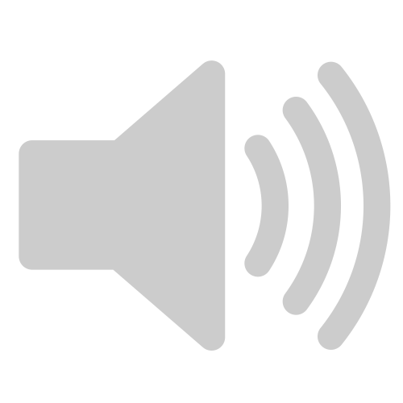

How to play
- The Arrow Keys move the character around
- Z: Ok / causes a short barrage of shots to be fired; it may be held down for rapidfire
- X releases a bomb, also known as a Spell Card (presuming that any are left)
- Esc brings you back to the title menu
made by @o2sh
Source code